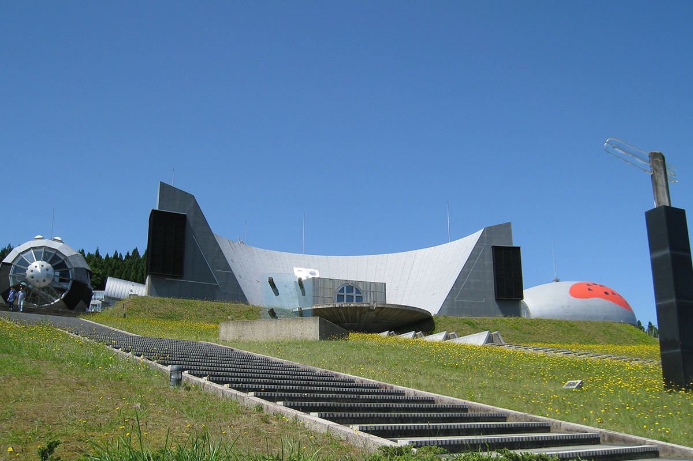
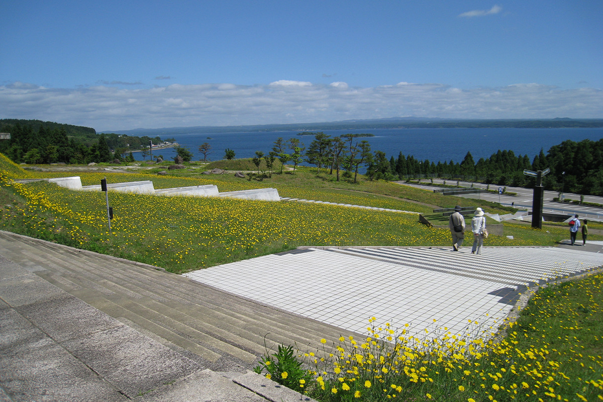
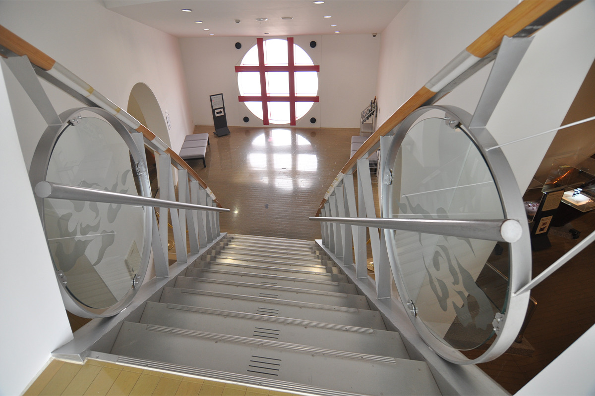
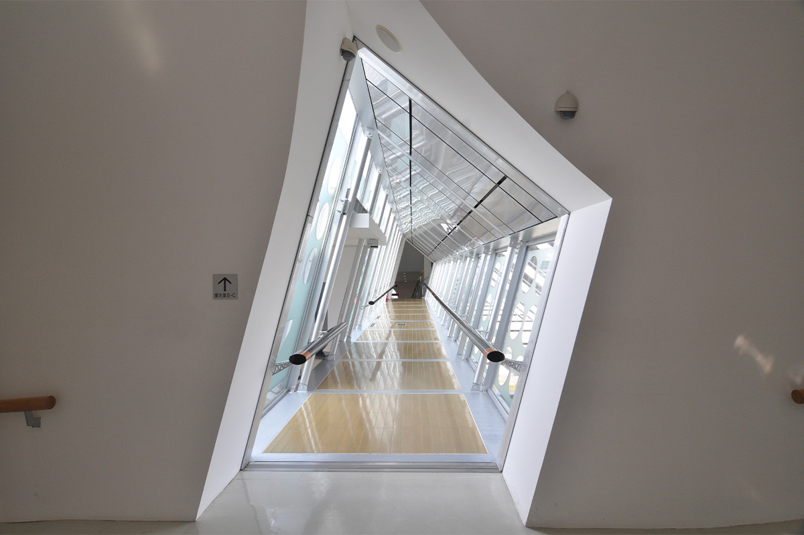
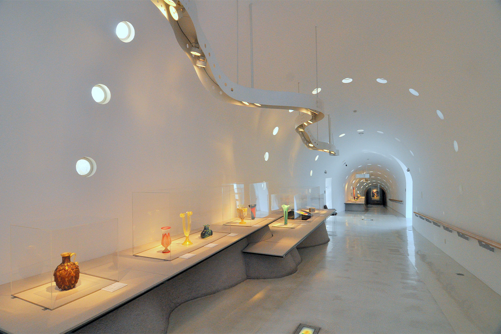
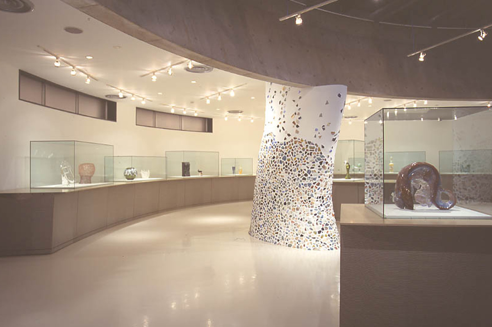
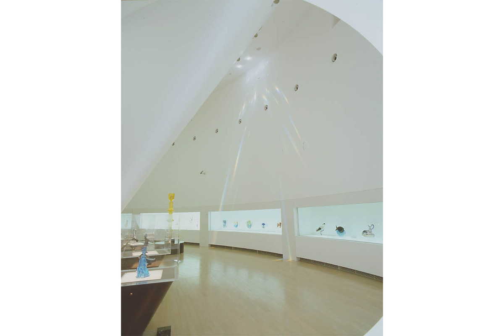
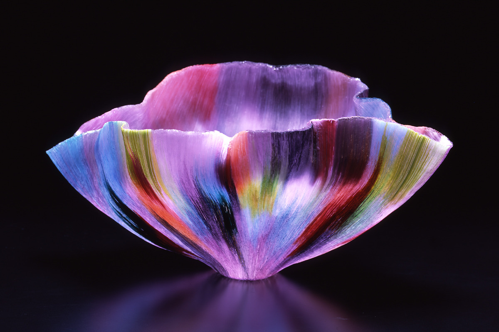
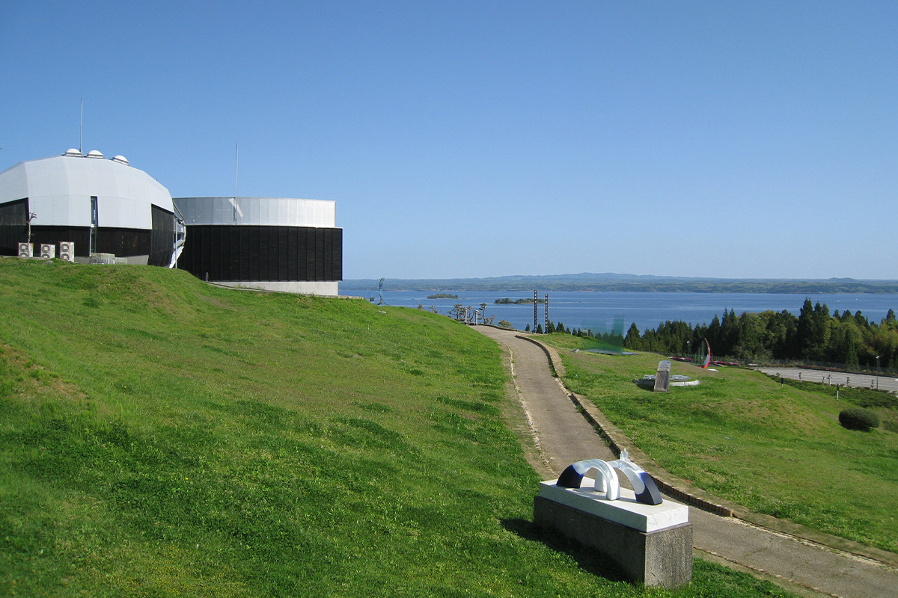

Префектура Исикава · Нанао, остров Нотодзима · архитектура и стекло
Музей стекла на острове Нотодзима: космическая база Кико Модзуны над заливом Нанао

На тихом острове посреди залива Нанао стоит здание, похожее на космическую базу. Это Музей стекла острова Нотодзима, и смотреть здесь стоит не только на витрины: архитектор Кико Модзуна превратил в произведение искусства сами залы, коридоры и сад.
Остров
Нотодзима и стекло

Полуостров Ното выдаётся далеко в Японское море, а в его середине, словно в ладонях, лежит остров Нотодзима. В 2023 году здесь жили около 3000 человек. Остров окружён спокойными водами залива Нанао, природа на нём почти нетронутая, и при этом есть аквариум и кемпинги, так что туристы приезжают сюда каждый год.
Музей стекла острова Нотодзима открылся в 1991 году при поддержке префектуры Исикава. Образцом послужила Венеция, европейская столица стекла, а сам остров задумали как «остров стеклянного искусства». В собрании около 450 работ, в основном современное стекло из разных стран мира и стеклянные изделия Китая эпохи Цин. Музей показывает признанные во всём мире произведения и рассказывает об истории и технике стеклянного искусства.
Землетрясение на полуострове Ното 1 января 2024 года повредило часть экспонатов, и музей надолго закрылся. Он открылся снова 12 июля 2025 года.
Архитектура
Здание, сад и залы как одно произведение
Корпуса музея похожи на космическую базу, а здание и сад спроектировал архитектор Кико Модзуна. Несколько корпусов соединены переходами, и в основе этой схемы лежит фэншуй: принцип «четырёх священных зверей», по которому когда-то строили и древнюю столицу Хэйан-кё, будущий Киото. На востоке город охраняет Лазурный дракон, на западе Белый тигр, на юге Красная птица, на севере Чёрная черепаха. Футуристические формы среди зелени, сад на склоне холма над морем, где сходятся японское и западное начала, залы с оптическими иллюзиями и особым светом: всё это задумано как искусство.

По всему зданию разбросаны облака, символ свободной изменчивости. Они нарисованы на зеркальной стене светлого вестибюля, окружённого стеклом, и на стекле у лестницы, ведущей в залы 3 и 4. Попробуйте найти все спрятанные облака.

В стеклянном переходе наклонены и потолок, и стены, поэтому даже стоя прямо чувствуешь, будто стоишь вкось. Горошек на оконном стекле становятся всё мельче по мере того, как идёшь вперёд, как в картине-обманке. Чёрные блестящие перила покрыты лаком: это поклон традиционным ремёслам префектуры Исикава.
Залы
Четыре пространства с секретами
Залы светлые, в основе белый цвет, и все четыре разные по форме и теме.

Зал 1: витрины в кварцевом песке
Если встать у двери, зал просматривается до самого конца. Но чем дальше, тем ниже потолок и уже стены, и на деле зал короче, чем кажется. На круглых окнах в потолке нарисованы чертежи музея, а нижнюю часть витрин покрывает напылённый кварцевый песок, сырьё для стекла.
Зал 2: колонна с керамикой Кутани-яки
Этот зал занимает высоту с первого по третий этаж. С потолка свисает красный объект, похожий на канат: задуман он как облака, окрашенные утренним и вечерним солнцем Ното. Прутья перил винтовой лестницы, которая спускается в зал первого этажа, расставлены в ритмичном порядке. В стеклянном лифте видно, как устроены кабина и механизм.

Декоративная колонна у центра зала на первом этаже покрыта пёстрыми черепками Кутани-яки.
Залы 3 и 4: радуга с потолка

В потолок встроены призмы, и в ясные дни с мая по август в залы падают радужные лучи. Этот эффект создаёт сама природа.
Собрание
От эпохи Цин до Дали
В собрании есть стеклянные изделия Китая эпохи Цин, стеклянные скульптуры, сделанные в Венеции по эскизам художников XX века, например Пикассо и Шагала, работы Дали, созданные вместе с мануфактурой Daum, а также произведения современных японских и зарубежных мастеров. Кроме выставок из собрания, несколько раз в год проходят тематические выставки о стекле.

В западном саду стоят 14 стеклянных скульптур, в том числе работы с конкурса «Нотодзима Гласс Арт Нау», который провели в 1991 году в честь открытия музея.

Садов здесь два, и они противоположны друг другу: западный со стеклянными скульптурами и японский с сухим садом камней карэсансуй. По замыслу это место, где встречаются Запад и Восток, место обмена между культурами. Здание словно укрыто природой острова, и сюда стоит приехать, чтобы увидеть стекло в окружении, которое само стало произведением.
Музей стекла острова Нотодзима
- Адрес
- префектура Исикава, Нанао, Нотодзима-Мукаида-мати, 125-10
- Телефон
- +81 767-84-1175
- Часы работы
- апрель–ноябрь 9:00–17:00, декабрь–март 9:00–16:30, вход до закрытия за 30 минут
- Выходные
- третий вторник месяца (если праздник, то следующий день), дни смены экспозиции и обслуживания, 29 декабря–1 января
- Цены / Вход
- для взрослых зависит от выставки, студенты 350 иен, школьники и младше бесплатно